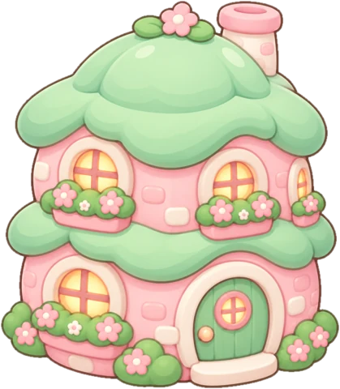

再写 2 条想法，房子长到第 3 层
🌸 人生小街 · 扫书于 2026-08-18
陈鲁豫：还是要相信
主持人陈鲁豫的人生思考随笔，6 大主题、55 个问题：爱情、自由、他人的眼光、工作、自律、独处。语气像闺蜜，也像诤友，核心是一句：无论生活如何，还是要相信心底最初相信的东西。
👤 关于作者
陈鲁豫，主持人，凤凰卫视《鲁豫有约》主持二十余年，访谈过数千位嘉宾。本书 2021 年由花城出版社出版。
🌟 让这本书出名的句子
“无论生活如何对你，还是要相信，心底里最初相信的东西。”
中国青年网 · 陈鲁豫访谈 ↗“我坚持相信，坚持爱，坚持相信爱，这是我生活的勇气和支点。”
微信读书 · 图书简介（作者语） ↗“自律会让人更体面，令人更接近心目中那个最好的自己。”
微信读书热门划线 · 4910 人划过（节选） ↗“一生很长，出发时如果没有足够的信念和光亮，怎么支撑并照亮一生呢？”
微信读书热门划线 · 4005 人划过 ↗“生活，没有标准答案和所谓该有的样子。”
微信读书热门划线 · 3312 人划过（节选） ↗“每天做一件事，并不为什么，就是持续不断地做，也无所谓结果，这本身就是意义。”
微信读书热门划线 · 2816 人划过（节选） ↗“我能想到的最可贵的年轻的品质，就是理直气壮，眼里有光。”
微信读书热门划线 · 2490 人划过 ↗“职场不是你家。”
微信读书热门划线 · 2715 人划过（节选） ↗
🌿 值得带走的 5 点
人生排序没有对错，只有阶段
每个阶段的排序都会变。当年的选择在当年是对的，不必用今天的标准回头审判自己。
自律的回报是体面，不是快乐
她很诚实：自律并不愉悦，也不保证成功，但会让人更接近心目中最好的自己。不要指望自律让你开心，它给的是另一种东西。
提高被取代的成本
任何人都可以被取代，所以要做一个靠谱的人：可以有性格，但不要任性。职场给的是酬劳、成长、经验和人脉，温暖是锦上添花。
持续做一件小事本身就是意义
不为结果，每天做一件事。意义不一定在终点，也可以在重复里长出来。
相信，是一种主动选择
看过很多人的起落之后，依然选择相信爱和生活。相信不是天真，是知道了还愿意。
🔥 5 个值得质疑的观点
书里说感情里的问题，根本原因是「不够爱」。
我们反驳把争吵、金钱问题都归结为「不够爱」很有力量，但关系研究发现，沟通方式、压力和经济状况本身就会侵蚀很相爱的两个人。只用爱不爱来解释，会让人错过可以修的地方。
【补充】Claude 的论证，非引文
书里说自律会让人更接近最好的自己。
我们反驳「最好的自己」常常是社会期待的投影（身材、效率、情绪稳定）。过度强调自律，容易让休息、失控、软弱变成罪过。有时候最好的自己，是允许自己不那么自律的那个人。
【补充】Claude 的论证，非引文
书里说被动选择，说到底是自己懒了、累了、退而求其次了。
我们反驳这句话很刺人，但它忽略了结构：家庭经济、性别期待、地域机会都在限制选择。把所有被动都归于个人意志，对处境不利的人不太公平。
【补充】Claude 的论证，非引文
书里说这本书能帮读者抵挡焦虑与困惑。
我们反驳书的视角来自一位功成名就的名人，很多建议（独处、坚持爱、不将就）需要经济和社会资本才能落地。豆瓣评分 6.8，不少读者觉得温暖但不够具体。
书里说生活没有标准答案。
我们反驳说得对，但「没有标准答案」也可能变成不做判断的理由。有些选择确实更好（比如离开伤害你的关系），承认这一点比「怎样都可以」更有帮助。
【补充】Claude 的论证，非引文
🗺️ 脑图复习
拖动、缩放，点圆点展开或收起。
📒 整理后的笔记
六个主题，按我的关注排
- 💔 爱情与亲密关系（划得最重）
- 🧭 人生排序与自由（全书的核心主张）
- 👁 他人的眼光
- 💼 工作与职场
- 🏃 自律
- 🌙 独处
核心主张：反悔消解机制
排序没有对错 → 排序会随阶段改变 → 所以当年的选择在当年是对的，不必回头后悔。
职场两条
- 尽量提高自己被取代的成本
- 做一个靠谱的人，可以有性格，但不要任性
💭 我的想法 3
- 💭 谁不是先装做很厉害的样子，装着装着，做着做着，突然发现，自己真的变成了一个很厉害的人
- 💭 只要活着，就有清零重启的机会。好好活着！最好的都在路上！
- 💭 绝大多数人只是彼此一段人生旅程的陪伴着。那么身边的人，此刻，就是照亮现在的最重要的存在。